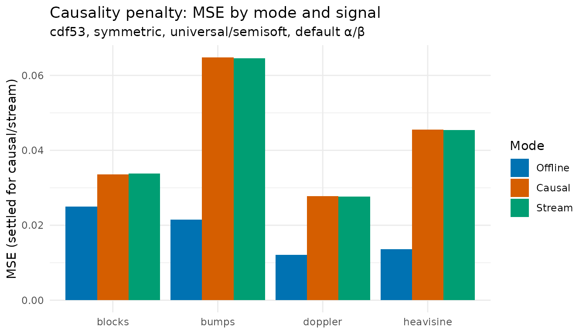
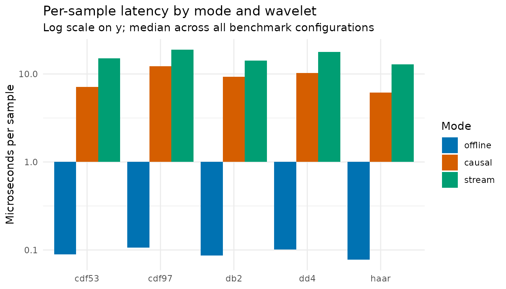

The introduction vignette presented offline, causal and stream as
three modes with the same API. This vignette focuses on the two
sliding-window modes: when to prefer them over offline, what they cost
in MSE and latency, and how to set the parameters that they introduce.
Causal and stream both add window_size and
update_freq over the offline call; stream alone adds
irregular = TRUE (at creation) and t_val (per
sample on the closure), which is its mechanism for irregular-grid input.
Causal accepts t as a single vector, the same way offline
does. The empirical claims come from the regular-grid benchmark in
data/benchmark_rlifting.rda; window_size and
update_freq are kept fixed in that benchmark, so guidance
on those axes is heuristic.
library(rLifting)
if (!requireNamespace("ggplot2", quietly = TRUE)) {
knitr::opts_chunk$set(eval = FALSE)
message("'ggplot2' is required to render plots. Vignette code will not run.")
} else {
library(ggplot2)
}
data("doppler_example", package = "rLifting")
data("benchmark_rlifting", package = "rLifting")
set.seed(20260522)1. Why causal mode exists
The offline path has full access to the signal: the output at sample can depend on every sample in the input. In many applications that assumption is invalid:
- Backtesting financial models: feeding tomorrow’s prices into today’s denoiser counts as look-ahead bias and inflates apparent performance.
- Real-time control loops: at the moment a controller fires, only past samples exist.
- Streaming sensors: data arrives one packet at a time; the denoised value must be emitted before the next packet is observed.
Causal mode replicates the streaming behaviour over a historical
record (one batch call); stream mode is the same engine exposed as a
sample-by-sample closure. Both rely on a fixed-size ring buffer holding
the most recent window_size samples; nothing past sample
is ever read.
2. The cost of causality
The bounded-history constraint has a measurable MSE cost. Below, the
four DJ test signals denoised under the same wavelet (CDF 5/3), same
boundary (symmetric), same shrinkage (semisoft, universal,
default α/β), running offline against causal:
sub = subset(
benchmark_rlifting,
Wavelet == "cdf53" & Boundary == "symmetric" &
ThresholdMethod == "universal" & !grepl("tuned", Method) &
Shrinkage == "semisoft"
)
penalty = data.frame(
Signal = unique(sub$Signal),
offline_MSE = sapply(unique(sub$Signal),
function(s)
sub$MSE_median[sub$Signal == s & sub$Mode == "offline"]),
causal_MSE_settled = sapply(unique(sub$Signal),
function(s)
sub$MSE_settled_median[sub$Signal == s & sub$Mode == "causal"]),
stream_MSE_settled = sapply(unique(sub$Signal),
function(s)
sub$MSE_settled_median[sub$Signal == s & sub$Mode == "stream"])
)
penalty$causal_over_offline = round(
penalty$causal_MSE_settled / penalty$offline_MSE, 2
)
penalty
#> Signal offline_MSE causal_MSE_settled stream_MSE_settled
#> blocks blocks 0.02497845 0.03362542 0.03382869
#> bumps bumps 0.02149096 0.06482313 0.06452320
#> doppler doppler 0.01208103 0.02778692 0.02760563
#> heavisine heavisine 0.01366599 0.04548531 0.04538083
#> causal_over_offline
#> blocks 1.35
#> bumps 3.02
#> doppler 2.30
#> heavisine 3.33Two facts emerge from the table:
- The causal penalty is signal-dependent: roughly 1.3× on
blocks(discontinuities are easy to localise from past data) up to 3.3× onheavisine(smooth oscillations need broader support to estimate). -
Causal and stream MSEs are very close, agreeing to
about three decimal places in the table above. They share the same
WaveletEngine, so for a fixed input signal under matching parameters the two paths agree to within numerical rounding; the small residual differences visible in the benchmark stem from the independent Monte Carlo noise realisations the benchmark assigns to each mode in parallel jobs. Choosing between them is an interface choice (batch call versus a per-sample closure), not an accuracy choice.

Figure 1: Causality penalty across the four Donoho–Johnstone signals. Offline (left) uses the full signal; causal and stream (right) only past samples. Penalty ranges from 1.3× on blocks to 3.3× on heavisine.
3. Choosing window_size
window_size
()
sets how many past samples the engine keeps in memory at any time.
Larger
gives a more stable MAD-based
and finer spectral resolution; smaller
gives lower memory footprint, shorter warm-up, and lower per-sample
compute. The package’s current benchmark fixed
,
so the recommendations below are heuristic — to be validated by a
window-sweep extension to the benchmark.
# Sketch of the trade-off (heuristic, not a chunk you should run blindly)
window_size = 63 # short — fast, lower resolution, ~31 raw samples at start
window_size = 127 # short-medium
window_size = 255 # benchmark default
window_size = 511 # long — better σ̂, more memory, longer warm-upGuidelines that hold under the design assumptions in
inst/notes/02-adaptive-thresholding.md:
- should be at least so the coarsest detail subband still holds a useful number of coefficients for the inverse transform.
- must be odd — the engine enforces this by adding 1 if an even value is supplied.
- Larger pushes the warm-up zone wider: the first samples are returned as-is.
For most applications, balances stability and latency well. Lower values can be used if memory or warm-up cost dominates.
4. Choosing update_freq
update_freq is how often the adaptive threshold is
recomputed. With update_freq = 1 (default), the engine
recomputes
and the per-level
at every sample. With update_freq = k, it recomputes every
samples and reuses the cached thresholds in between. The benchmark fixed
update_freq = 1; the heuristic below comes from
inst/notes/02-adaptive-thresholding.md §6.2:
| Noise behaviour | Recommended update_freq
|
|---|---|
| Highly non-stationary (bursts, sudden regime shifts) | 1 |
| Mildly non-stationary | 5–20 |
| Stationary or quasi-stationary | 10–50 |
| Genuinely stationary, throughput-critical | 50–100 |
The CPU saving is roughly proportional to update_freq:
the threshold computation is the dominant per-sample cost; once cached,
the rest of the pipeline is fast. The benchmark does not currently
quantify this trade-off; the per-sample numbers in §5 below all reflect
update_freq = 1.
5. Per-sample latency
The streaming path is much slower than offline on a per-sample basis. Below, median per-sample time across all benchmark configurations, broken down by mode and wavelet:
latency = aggregate(
Per_sample_us_median ~ Mode + Wavelet, data = benchmark_rlifting,
FUN = median
)
latency$Per_sample_us_median = round(latency$Per_sample_us_median, 2)
reshape(
latency, idvar = "Wavelet", timevar = "Mode", direction = "wide"
)
#> Wavelet Per_sample_us_median.causal Per_sample_us_median.offline
#> 1 cdf53 7.10 0.09
#> 4 cdf97 12.26 0.11
#> 7 db2 9.33 0.09
#> 10 dd4 10.27 0.10
#> 13 haar 6.15 0.08
#> Per_sample_us_median.stream
#> 1 15.01
#> 4 18.94
#> 7 14.17
#> 10 17.73
#> 13 12.84
Figure 2: Median per-sample latency in microseconds across the three modes and five wavelets. Note the log scale — causal is ~80–115× slower per sample than offline, and stream adds another 1.5–2.1× over causal because of the R closure call overhead per sample.
Two practical takeaways:
- Offline is 50–200× cheaper per sample than the streaming modes. If the entire signal is available and you do not need leakage-free outputs, prefer offline.
-
Stream adds 50–110% on top of causal. The extra
cost is the R-side closure invocation per sample; the underlying C++
engine is the same. If you can batch the historical data, prefer
denoise_signal_causaland pay the R overhead only once.
For a one-shot historical pass of N = 100,000 samples with
haar at update_freq = 1, the table predicts
roughly 0.6 s for causal and 1.3 s for stream.
6. Causal-specific wavelet recommendations
The wavelet ranking under causal/stream differs from the offline ranking because longer filters spend a higher fraction of the sliding window in the boundary zone and the per-window is more variable than the global offline estimate. Best wavelet per signal in causal mode (across all benchmark configurations):
best_causal = aggregate(
MSE_settled_median ~ Signal + Wavelet,
data = subset(benchmark_rlifting, Mode == "causal"),
FUN = min
)
do.call(
rbind,
lapply(
unique(best_causal$Signal),
function(s) {
ss = best_causal[best_causal$Signal == s, ]
ss = ss[order(ss$MSE_settled_median), ]
data.frame(
Signal = s,
ranking = paste(ss$Wavelet, collapse = " > ")
)
}
)
)
#> Signal ranking
#> 1 blocks haar > cdf53 > cdf97 > db2 > dd4
#> 2 bumps haar > cdf53 > cdf97 > db2 > dd4
#> 3 doppler cdf97 > haar > cdf53 > db2 > dd4
#> 4 heavisine haar > cdf97 > cdf53 > db2 > dd4Summary: haar is the dominant causal-mode wavelet on
blocks, bumps and heavisine;
cdf97 retains its offline edge only on
doppler. Use haar as the default for new
causal/stream applications and switch to cdf97 only when
the signal is known to be smooth and oscillatory. The full mode-by-mode
comparison is the subject of
vignette("v07-benchmarks").
7. Leakage check by construction
Causality is a contract: the output at sample must not change if you alter samples after . The package guarantees this through the ring buffer (no future read access), but it is healthy practice to verify it on your own signal. Below, a counterfactual leakage test:
x = doppler_example$noisy
scheme = lifting_scheme("haar")
ws = 255
base_out = denoise_signal_causal(
x, scheme,
window_size = ws, levels = 4,
shrinkage = "semisoft"
)
# Counterfactual: corrupt the second half of the signal severely
x_perturbed = x
half = floor(length(x) / 2)
x_perturbed[(half + 1):length(x)] = x_perturbed[(half + 1):length(x)] +
rnorm(length(x) - half, sd = 5)
perturbed_out = denoise_signal_causal(
x_perturbed, scheme,
window_size = ws, levels = 4,
shrinkage = "semisoft"
)
# Outputs at positions ≤ half must be unchanged
max_diff_before = max(abs(base_out[1:half] - perturbed_out[1:half]))
max_diff_after = max(
abs(
base_out[(half + 1):length(x)] -
perturbed_out[(half + 1):length(x)]
)
)
data.frame(
region = c(
"samples 1..half (before perturbation)",
"samples (half+1)..n (after perturbation)"
),
max_abs_diff = c(max_diff_before, max_diff_after)
)
#> region max_abs_diff
#> 1 samples 1..half (before perturbation) 0.000
#> 2 samples (half+1)..n (after perturbation) 20.255The output on samples is bit-identical in the two runs (the corruption injected at cannot reach back). The output on samples differs, as expected. This is the leakage-free guarantee in action; the same test can be run on any user signal to confirm.
8. Decision guide
8.1 When the benchmark gives a direct answer
| Question | Recommendation | Evidence |
|---|---|---|
| Which mode if I have the full signal and do not need leakage-free outputs? | denoise_signal_offline() |
Per-sample latency 50–200× lower than causal/stream (§5 table) |
| Which mode if I have the full signal and need leakage-free outputs? | denoise_signal_causal() |
Same engine and same MSE as stream, lower R overhead (§5 plot) |
| Which mode if I emit one sample at a time in production? | new_wavelet_stream() |
Designed for the per-sample interface; stateful closure |
| Which wavelet for causal/stream? |
haar by default; cdf97 only
if signal is smooth-oscillatory |
causal best-wavelet table (§6) |
| Should I expect a quality cost vs offline? | Yes, 1.3×–3.3× MSE on the DJ benchmark | Causality penalty table (§2) |
8.2 Recommendations from the wavelet-denoising literature
The recommendations below come from established work in the
wavelet-denoising literature and from
inst/notes/02-adaptive-thresholding.md. They have empirical
support in their original sources; the package’s current benchmark,
however, fixes window_size = 255 and
update_freq = 1 and so has not independently re-confirmed
them on rLifting’s specific code paths. Treat them as well-established
defaults whose translation to a particular workflow may benefit from a
quick local check before being relied on.
| Situation | Recommendation |
|---|---|
| Memory/latency budget is the bottleneck | smaller window_size (63–127); accept a
noisier
|
| Quality is the bottleneck, memory is not | larger window_size (511+); longer warm-up
but more stable thresholds |
| Stationary noise, want lower CPU | update_freq = 10–50 |
| Highly non-stationary noise (bursts) | update_freq = 1 |
| Causal denoising on irregular grids |
denoise_signal_causal(x, scheme, t = t_phys, ...)
accepts t the same way as offline |
For the broader empirical context — mode-by-mode wavelet comparisons,
regular- and irregular-grid results, and package-against-package
benchmarks — see vignette("v07-benchmarks") and the
practical guidance in vignette("v01-introduction") §3. For
the threshold subsystem covered briefly in §4 here, see
vignette("v02-thresholding-and-tuning"). The operational
reference for the adaptive threshold (formulas for
,
,
the four shrinkages, and the engine’s update protocol) is
inst/notes/02-adaptive-thresholding.md.
References
Donoho, D. L., & Johnstone, I. M. (1994). Ideal spatial adaptation by wavelet shrinkage. Biometrika, 81(3), 425–455.
Liu, Z., Mi, Y., & Mao, Y. (2014). Improved real-time denoising method based on lifting wavelet transform. Measurement Science Review, 14(3), 152–159. DOI: 10.2478/msr-2014-0020.
Sweldens, W. (1996). The lifting scheme: A custom-design construction of biorthogonal wavelets. Applied and Computational Harmonic Analysis, 3(2), 186–200.